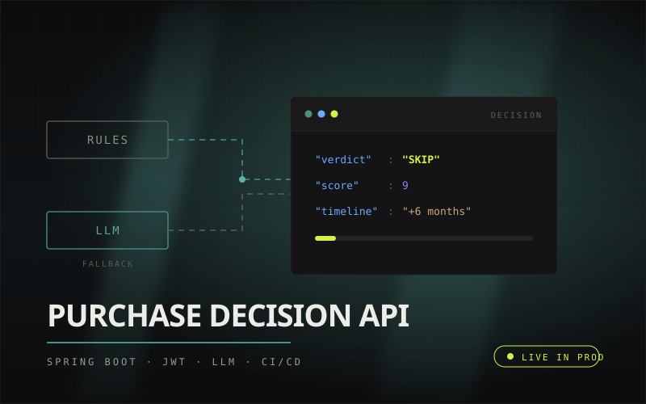

Purchase Decision API
LiveA REST API that scores a purchase against income, savings goals, and spending history, and returns a BUY / WAIT / SKIP verdict with a score and a savings timeline. It is the one running in production. Try it above.
Java 21Spring Boot 3Spring SecurityJWTJPAPostgreSQLDockerGitHub ActionsJUnit 5